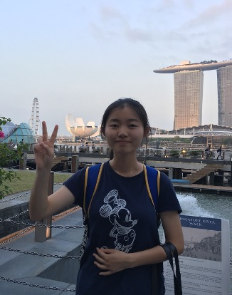

|  |
I am currently a Research Fellow at School of Computer Science and Engineering, Nanyang Technological University, working with Prof. Luu Anh Tuan. Prior to this, I obtained my Ph.D. degree in Computer Science from Singapore University of Technology and Design (2019 - 2023) and my B.Eng. degree in Computer Science and Technology from Zhejiang University (2014 - 2018). My current research interests focus on robustness, safety and fairness of large language models and large language models as an agent. Feel free to contact me if you are interested in any discussions!
Email: chen.hui@ntu.edu.sg / hui_chen@mymail.sutd.edu.sg / chchenhui1996@gmail.com [CV] [Google Scholar] [Github] [LinkedIn] |